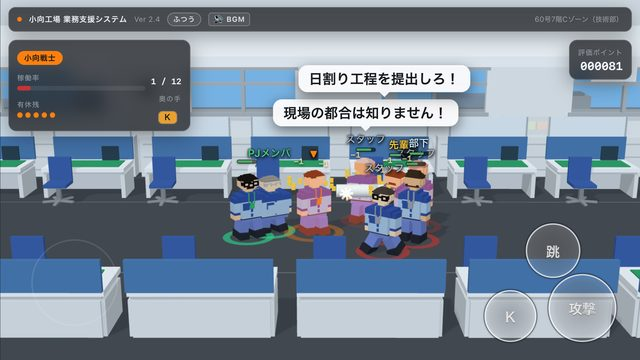
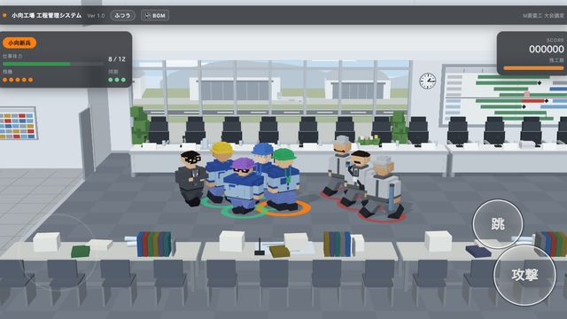

起動するシステムを選択

小向工場 業務支援システム Ver 2.4
KOMUKAI QUEST
小 向 ク エ ス ト
小向戦士となり、小向工場を生き残れ。
▶ 本編をプレイ
まずはこちらから

小向工場 工程管理システム Ver 1.0
KOMUKAI QUEST 2
ゴ ー ル デ ン エ イ ジ 編
— 後にそう呼ばれる者たちの物語 —
▶ ゴールデンエイジ編をプレイ
前日譚・本編クリア後がおすすめ